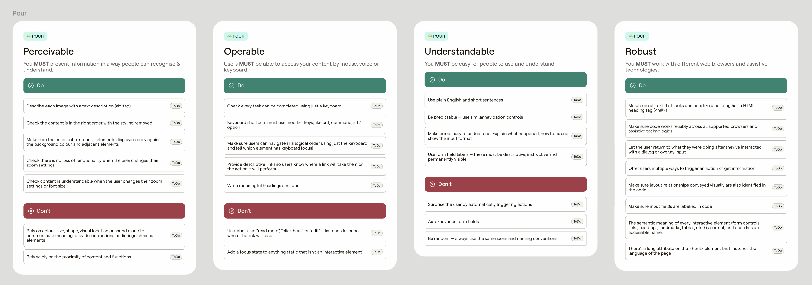

Creating consistency at scale
Pando design system aims were to deliver consistency, ensuring a unified visual language across products, aligning with the new brand identity. It also aimed to reducing feature delivery times and improve accessibility, complying with upcoming EU accessibility regulations.
The system was built on a semantic token foundation, ensuring brand coherence across themes, with baked-in support for colour, viewport, and density modes
My role
As a Product Designer in the Design Systems team, I focused on component development—planning, designing, and building reusable UI components for designers and engineers. I optimised workflows for efficiency and consistency, collaborated cross-functionally to ensure usability and feasibility, and embedded accessibility considerations throughout
Process
To maintain consistency while allowing for autonomous work, I collaborated with fellow designers to develop a standardised component template. This template structured our workflow into four key stages:
Reviewing existing use cases and live examples, as well as gathering insights from designers, engineers, and user research.
Conducting desk research on best practices from other design systems. Experimenting with component variations and identifying edge cases and assessing technical feasibility in collaboration with engineers.
Defining the information architecture of each component, then mapping out component variants and their states. We made sure to align with engineering on naming conventions, prop structures, and implementation details.
Providing clear usage guidelines, do’s and don’ts, and accessibility standards as well as ensuring documentation is comprehensive yet accessible for both new and experienced system users.
We created checklists to sit beside our component work to ensure we had covered everything, as well as being a way to highlight design debt.

We followed WCAGs POUR framework to ensure all of our components consistently adhered to pre defined accessibility principles.
Enhancing designer/engineer experience
Throughout the component creation we ensured the needs of consumers of the design system were considered at every stage. For designers, using the component in Figma had to be simple, so the workings of a component were regularly tested by different designers before it went into production. To optimise the engineering experience, we adopted prop naming conventions and code links to encourage dev mode adoption.
Validation & iteration
To ensure the system remained effective and scalable, we adopted an iterative, feedback-driven approach, involving:
- Regular design critiques – Sharing work early and often for peer review.
- Cross-functional feedback sessions – Collaborating with engineering to validate feasibility.
- Stakeholder reviews – Aligning with product leads and senior decision-makers.
The below screens illustrate how individual compoenents were used across the Dojo product eco system;
Learnings
A big learning for me during these 4 months of work, was that a design system is not just about crafting components—it’s about empowering designers and developers to work more efficiently and effectively. My contributions so far helped:
- Improve design-to-development alignment, making handovers smoother and more intuitive.
- Ensure accessibility was considered upfront, rather than as an afterthought.
- Foster a culture of collaboration through continuous feedback loops, training, and retrospectives.